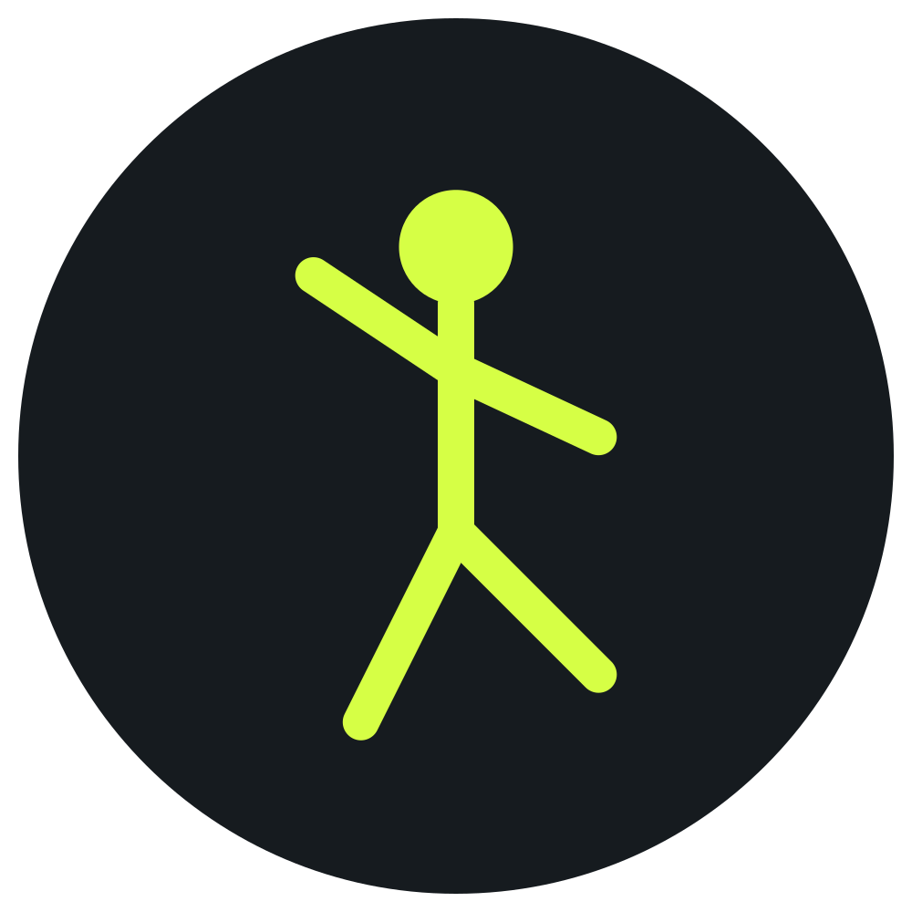
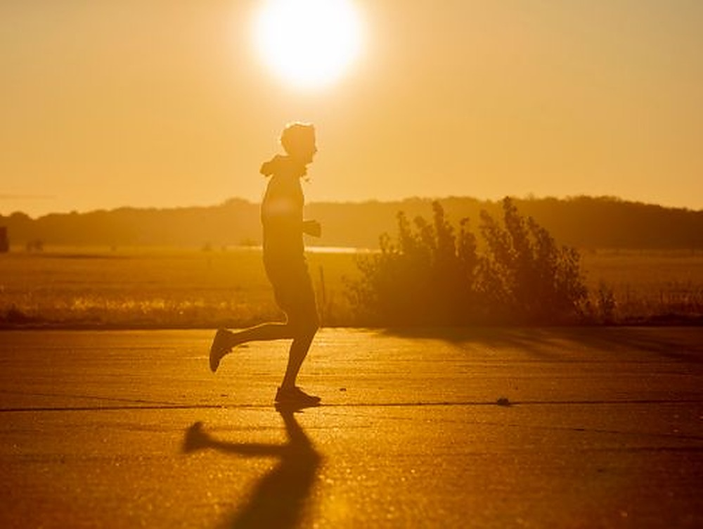

Was ist ein Ultramarathon?
- Marathon: 42,195 km
- Ultra: jeder Lauf, der länger ist
- Berge: alpine Trails, grosse Anstiege
- Wüste: Hitze, Sand, sechs Tage
- Backyard: jede Stunde eine Runde
- Länge: von 50 km bis 386 km (240 Meilen)
Erfahre, wie Tausende von Athletinnen und Athleten über 42 Kilometer hinausgehen, um durch Berge, Wüsten und endlose Hinterhöfe zu laufen.
Film ansehen1921
Comrades Marathon gegründet
50 KM+
Ultramarathons beginnen bei 50 Kilometern
250 KM
Marathon des Sables, sechs Tage

6,7 KM
Runde beim Backyard-Ultra
Was passiert, wenn du entscheidest, dass ein Marathon nicht genügt? Wenn sich 42 Kilometer wie erst der Anfang anfühlen? Willkommen in der Welt der Ultramarathons – einem Ort, an dem Ausdauer auf Besessenheit trifft und der menschliche Geist seine wahren Grenzen findet.
Arda Saatçi
Epischer Ultra-Trail-Film über mentale Grenzen und Ausdauer.
AUF YOUTUBE ANSEHEN →Ultra Running ist in den vergangenen zwei Jahrzehnten enorm populär geworden. Was einst eine Nischendisziplin einer kleinen Gruppe engagierter Athletinnen und Athleten war, ist zu einem globalen Phänomen geworden. Von Trailrennen in den Alpen über Wüstendurchquerungen in Marokko bis hin zu nächtlichen Bergmarathons und 24-Stunden-Runden im eigenen Hinterhof – Ultramarathons bieten für jeden extremen Läufer etwas.
Ultra Running dreht sich jedoch nicht nur darum, weiter zu laufen. Es ist ein kompletter Lebensstilwechsel. Es bedeutet, mentale Barrieren zu überwinden, den eigenen Körper an Grenzen zu bringen, von denen man nie gedacht hätte, dass sie erreichbar sind, und Stärke zu entdecken, von deren Existenz man nichts wusste. Für viele Läuferinnen und Läufer stellt der Ultramarathon den ultimativen Test menschlicher Ausdauer und Belastbarkeit dar.
Menschen haben sich schon immer für extreme Herausforderungen begeistert. Im Lauf der Geschichte haben Entdecker Grenzen verschoben – sie haben Berge bestiegen, Wüsten durchquert und unbekannte Ozeane befahren. Ultra Running ist die moderne Form dieses Antriebs. Es ist eine Möglichkeit, die Grenzen menschlicher Leistungsfähigkeit zu erkunden, ohne spezielle Ausrüstung oder jahrelange Vorbereitung zu benötigen. Man läuft einfach los.


Der älteste ununterbrochen ausgetragene Ultramarathon ist der Comrades Marathon in Südafrika, der 1921 ins Leben gerufen wurde.
Manche Ultraläufer absolvieren über 300 Kilometer in einem einwöchigen Etappenrennen.
Backyard-Ultras folgen einem besonderen Format: Die Läuferinnen und Läufer absolvieren Runden von 6,7 Kilometern, bis nur noch eine Person übrig ist.
Moderne Ultramarathons reichen von 50 Kilometern (31 Meilen) bis zu über 240 Meilen bei Einzelveranstaltungen.
Der Desert Marathon des Sables umfasst 250 Kilometer über sechs Tage in der Sahara Marokkos.
Ultra Running hat auch Prominente und Elitesportlerinnen und -sportler aus dem Mainstream-Sport angezogen.
Ultra Running ist nicht für jeden – aber vielleicht ist es genau das Richtige für dich. Ob du ein erfahrener Marathonläufer bist, der nach einer neuen Herausforderung sucht, oder jemand, der neugierig darauf ist, menschliche Grenzen zu verschieben: Dieser Leitfaden erklärt dir alles Wissenswerte über die Welt der Ultramarathons.